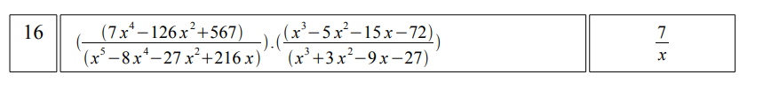
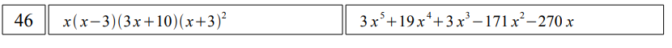
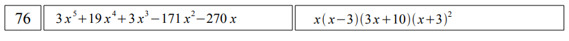

Лабораторна робота студентки 1 курсу групи "Математика" Чулкової Анни Олегівни
Звыт до підсумкового контролю.
"Математичний пакет WXMaxima"
1) Стор.74-75 (Спростити алгебраїчні вирази)(№9+7=16)iframe з результатом у png форматі

2) Стор.76 (Розкрити дужки та навести подібні доданки)(№9+37=46)iframe з результатом у png форматі

3) Стор.78 (Розкладіть вираз на множники)(№9+67=76)iframe з результатом у png форматі

4) Стор.80 (Графічно дослідіть рішення нелінійних рівнянь та отримайте відповідь)(№9+107=116)iframe з результатом у png форматі